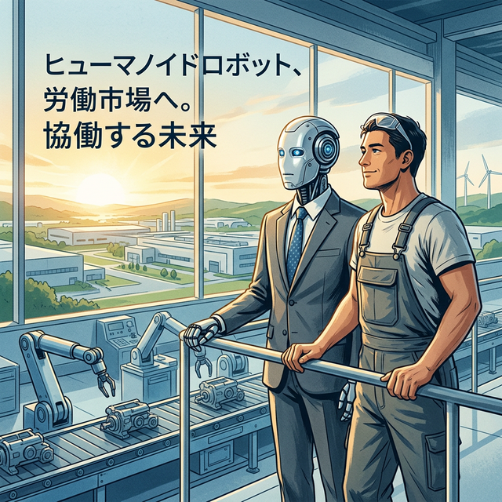

機械の徒、人の業 ―令和八年、労働市場における「鋼の隣人」を巡る考察―

余談ながら、筆者はこの令和八年という歳月を眺めるにつけ、かつての幕末における「黒船」の到来を思い起こさざるを得ない。当時の武士たちが蒸気機関という得体の知れない怪物に度肝を抜かれたように、現代の我々は「AIロボット」という、魂を持たぬ労働力の台頭に直面しているのである。
一、技術の骨格：論理という名の筋肉
構造的に見れば、このAIロボットという存在は、従来の蒸気機関や電気モーターの延長線上にあるものではない。それは「論理」そのものを物理的な四肢に直結させた、人類史上初めての「自律する道具」である。技術的視点から言えば、数兆ものパラメータが織りなすニューラルネットワークが、かつての熟練工が数十年かけて培った「勘」を、わずか数ミリ秒の計算処理に置き換えてしまった。この構造的な転換は、もはや道具が人間を助けるという次元を超え、道具が判断を代行するという新局面を切り拓いたのである。
二、個人の深淵：職場という名の戦場
翻って、これに対峙する個人の感慨はどうであろうか。ある者は、自らの職域を侵食する鋼の隣人に怯え、ある者はその無慈悲なまでの正確さに安堵を見出す。かつて、職人はその手に馴染んだ道具を「体の一部」と呼んだが、現代の労働者は、自らより遥かに効率的な「知能」を傍らに置き、自らの存在意義を問い直すことを強いられている。この個人的な焦燥は、かつて産業革命の荒波に揉まれたラッダイト（機械破壊者）たちの怒りにも似ているが、その矛先はもはや機械ではなく、自分自身の「人間としての価値」に向かっているようにも見える。
三、社会の視座：新しき共同体の構築
社会的・システム的な側面において、日本社会は今、この「鋼の労働力」をどう組み込むかという壮大な実験場と化している。少子高齢化という抗い難い潮流の中で、AIロボットは救世主として迎え入れられる一方で、富の偏在や雇用の再定義という深刻な摩擦を引き起こしている。社会のシステムそのものが、人間のための福利厚生から、機械と人間が共生するための「最適化されたインフラ」へと変貌を遂げようとしているのだ。これは単なる産業の入れ替えではなく、文明のOSそのものを書き換える行為に他ならない。
「AIロボットとの共生」。この言葉は美しく響くが、その実態は、人間が自らの定義を拡張し続けるための、終わりのない試練なのであろう。令和八年、我々はまだその「序章」のページをめくったばかりなのである。